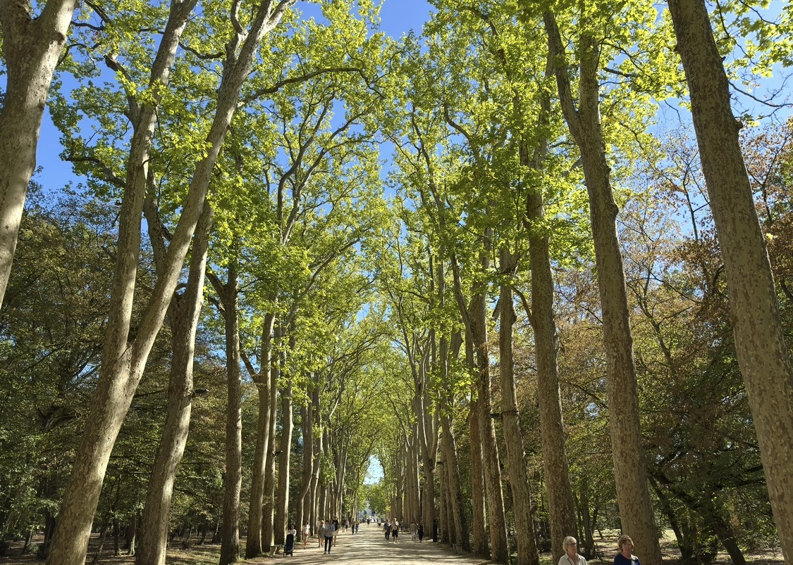
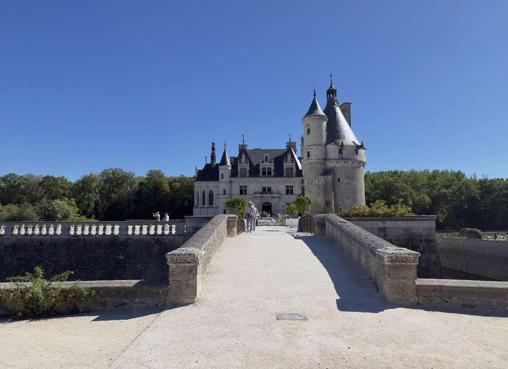
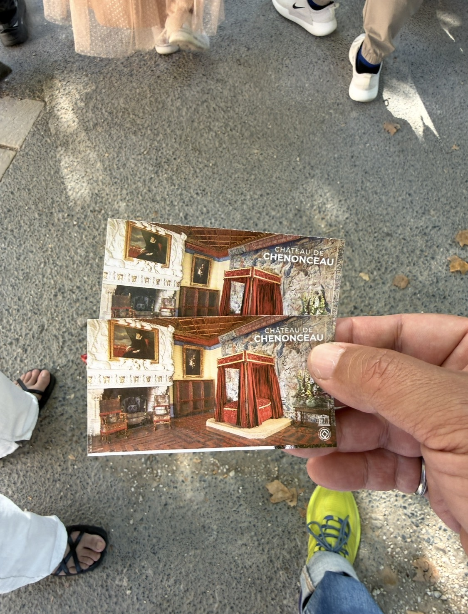
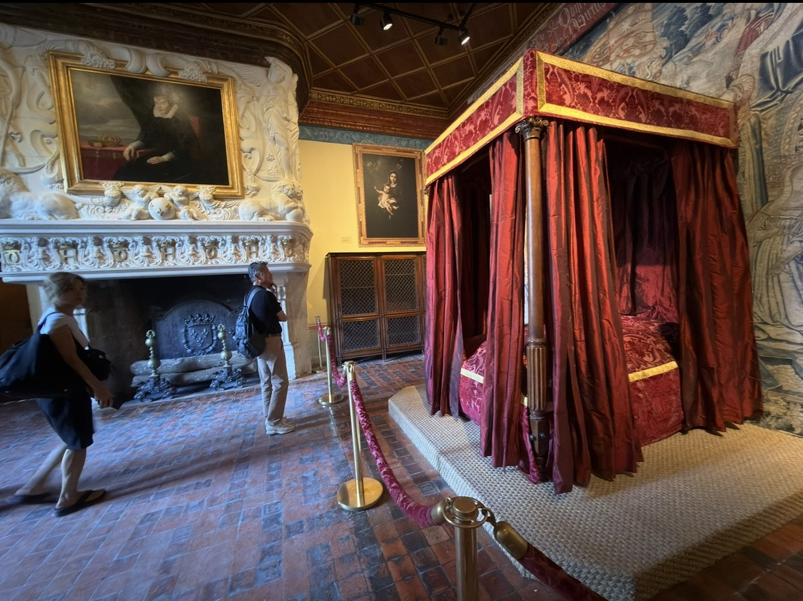
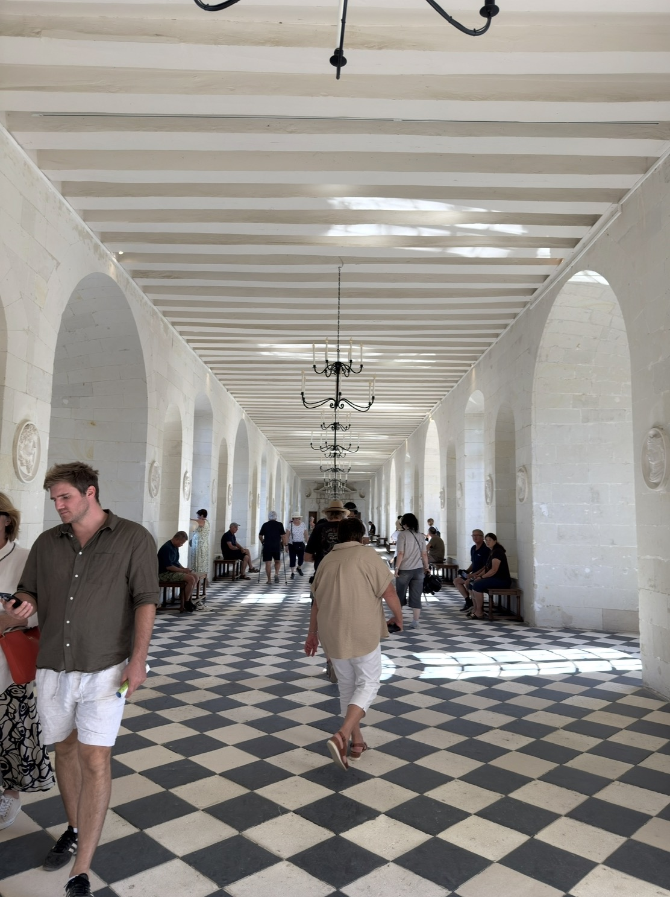
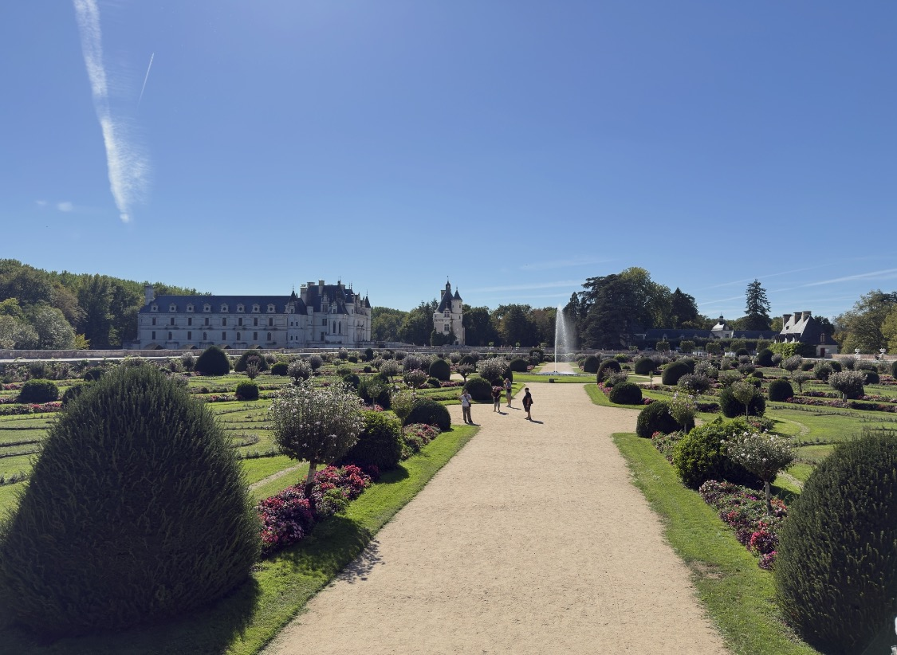
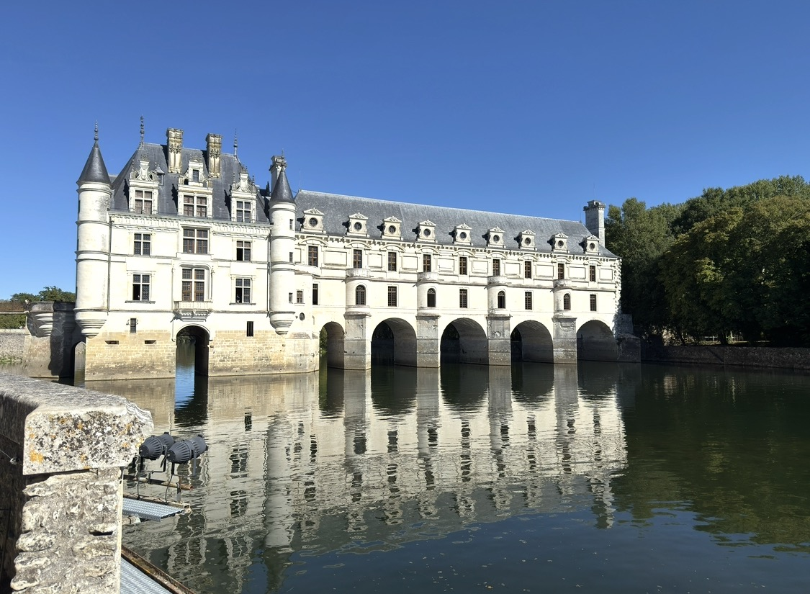

這一天的天空藍得太過分。
從林蔭大道往裡走，陽光從高大的樹冠一格一格落下來；再走到水邊，白色城堡、深綠色河面和幾乎沒有雜質的藍天疊在一起，照片怎麼拍都很像明信片。


可是雪儂梭堡真正把我拉住的，並不是它有多漂亮。
而是我終於在法國旅途中，聽見了一個我熟悉的名字：
麥地奇。
2019 年在佛羅倫斯，我是回台灣後才慢慢把麥地奇家族補回來；這一次，我總算能在故事還發生在眼前時，跟著歷史往前走一點。
雪儂梭堡裡，兩個女人留下了兩種痕跡
走進這座城堡後，最重要的兩個名字很快浮了出來。
黛安・德・普瓦捷（Diane de Poitiers），是法王亨利二世最重要的情婦與宮廷寵臣，而且比亨利二世年長將近二十歲。
另一位則是亨利二世的王后——凱瑟琳・德・麥地奇（Catherine de’ Medici），出身佛羅倫斯麥地奇家族。
一位先把自己的痕跡留在花園與跨河橋上；另一位則在之後接手這座城堡，把橋延伸成長廊，也把自己的政治與審美刻進雪儂梭堡。從這裡開始，眼前的建築就不再只是漂亮，而像是一段權力關係被具體留下來的形狀。

與其說她帶著麥地奇的謀略來，不如說她自己就是一樁王朝政治
我那時一邊聽領隊講她們之間的感情與角力，一邊冒出一個念頭：
凱瑟琳會不會本來就是背著麥地奇家族的某種謀略，被送進法國宮廷？
回來重新整理史料之後，我反而覺得更接近史實的說法是：她未必是帶著一套秘密計畫進來；她自己，就是一樁王朝外交的婚姻安排。
凱瑟琳出生於 1519 年，幼年便失去雙親。1533 年，十四歲的她嫁給同樣年輕的法國王子亨利——後來的亨利二世。這場婚姻本來就帶著義大利麥地奇勢力與法國王室之間的政治意味。
所以我後來愈想愈覺得，比起問「她是不是帶著家族陰謀來」，更值得問的也許是：
一個十四歲就被送進另一個王朝的女孩，到底有多少事情真正是自己選的？
我們當然沒有辦法替五百年前的人把內心補寫成確定答案，但至少可以知道，她抵達法國之後很長一段時間，並沒有因為「麥地奇」這個姓就自動取得主導權。
因為亨利二世真正寵愛的，是黛安
1547 年，亨利二世把雪儂梭堡送給黛安・德・普瓦捷。
不是借住。
是正式讓她擁有。
黛安在這裡整建花園，還在謝爾河上築起一座橋。也就是說，今天雪儂梭堡那個最有辨識度的「橫跨河面」的姿態，一開始有一半是她留下來的。
這時候的凱瑟琳是王后，黛安卻是國王最具影響力的寵臣。
如果只把這段歷史說成「正宮與小三搶房子」，其實太扁了。
它真正殘酷的地方，是感情、身份、財產與宮廷權力全部疊在一起。
甚至連房間裡的字母，都像故意留下伏筆
城堡裡黛安的房間，是我覺得最有戲的一處。
紅色四柱床、厚重壁爐、掛毯和肖像，整個空間很像舞台。
而官方導覽特別提醒：壁爐與格狀天花板上有亨利二世與凱瑟琳的字首 H 和 C；兩個字母交疊起來，卻又可能看成黛安（Diane）的 D。
我不知道五百年前每一雙走進這個房間的眼睛，會怎麼理解這組字母。
但放在這三個人的關係裡看，它實在太像一個不需要旁白的符號。

1559 年，局勢反過來了
亨利二世在比武事故中受傷，1559 年去世。
成為王太后的凱瑟琳，很快讓黛安交還雪儂梭堡，交換給她的是盧瓦爾河畔的 Chaumont 城堡。
然後，凱瑟琳開始真正改寫雪儂梭堡。
她在黛安已經築好的橋上加建兩層長廊。今天走進那條黑白棋盤格地面的長空間，會覺得它簡潔、明亮，甚至有點不像傳統城堡。
但它其實很像這段歷史本身：
一個女人先造了橋，另一個女人在那座橋上蓋出了自己的世界。

我走在長廊裡，才真正明白「女人的城堡」不是行銷詞
雪儂梭堡常被稱為 Château des Dames——「女人的城堡」。
這不是只因為黛安和凱瑟琳兩個名字夠有戲。
從早期參與興建城堡的 Catherine Briçonnet，到黛安築橋、凱瑟琳加建長廊與花園，再到後來保護、修復這座城堡的一代代女性，Chenonceau 的形狀本來就是一層層被女人改出來的。
而凱瑟琳後來甚至從城堡的「綠色書房」處理國政。她不再只是那個被安排嫁來法國、丈夫又長期眷戀別人的年輕妻子。
她最後成了法國最有權勢的政治人物之一。
所以我對她的感覺，反而不是單純的勝負
站在今天回頭看，很容易把故事寫成：
黛安得到國王的愛，凱瑟琳得到最後的城堡。
但我愈想，愈不想這樣替她們結算輸贏。
黛安確實擁有過亨利二世極深的寵愛與權力；凱瑟琳也確實在丈夫死後奪回城堡，並把自己的政治權力與審美留在這裡。
可如果把目光往前拉到凱瑟琳十四歲踏進法國宮廷那一刻，我反而會想到：她也許並不是帶著完整劇本來的人。
她可能只是先被放進劇本，然後花了很長的時間，才開始學會改寫它。
這當然是我站在五百年後的想像，而不是史料能直接證明的內心獨白。
但雪儂梭堡最有意思的地方，也正在這裡——建築讓那些抽象的問題有了可以站著看的地方。
這一次，ChatGPT 至少讓歷史沒有完全落在旅行後面
2019 年我去佛羅倫斯時，麥地奇對我而言其實還只是城市裡零碎出現的名字。
直到回台灣，看了 Netflix 的《麥地奇家族》，才開始把教堂、宮殿、人物與權力網絡慢慢接起來。
所以這趟走到雪儂梭堡，我很明顯感覺到差別。
手機上的 ChatGPT 導覽有時候會慢一點，訊息不是每一次都能立即跳出來；但至少還跟得上我的腳步。
看到一個名字，可以立刻問。走進一個房間，可以立刻補背景。
旅行終於不是「先看完，幾年後才理解」。
而是理解和觀看，第一次有機會發生在同一天。
只是，集合時間還是在追我
這趟旅行有一個反覆出現的遺憾：時間總是不夠。
體能可以讓我在象鼻海岸走得更快，也可以讓我在聖米歇爾山一路爬上去；但到了雪儂梭堡，我更明顯感覺到，有些地方不是靠腳快就能補回來的。
房間、肖像、花園、長廊，每一個空間都還有一層歷史。
我可以趕在集合時間前走完。
但「走完」和「待過」，真的不是同一件事。
當腦子裡一直留著幾點集合、還剩幾分鐘，城堡原本應該有的寧靜與沉浸感，就會被削薄。

幸好照片把那天天空留下來了
回來整理照片時，我才重新看到那一天有多漂亮。
林蔭大道、城堡正面、河上的倒影、橫跨謝爾河的長廊、花園的幾何線條，全被一個幾乎完美的大晴天罩住。
尤其從側面看雪儂梭堡時，最能理解為什麼它和其他城堡不同。
它不是站在河邊。
它是真的把建築伸進河裡，再越過河去。
而那條跨河的形狀，剛好又是黛安與凱瑟琳兩個人的作品疊在一起。

我原本只是因為聽到「麥地奇」三個字而突然有了熟悉感。
後來才發現，真正讓我記住雪儂梭堡的，是一件更複雜的事：愛情、婚姻、家族、王權、女人自己的選擇，原來都可以被留在一座橋、一間房、一座花園裡。
如果有一天再回來，我希望不是再走快一點。
而是可以慢慢走，慢慢看，讓這座城堡把話說完。